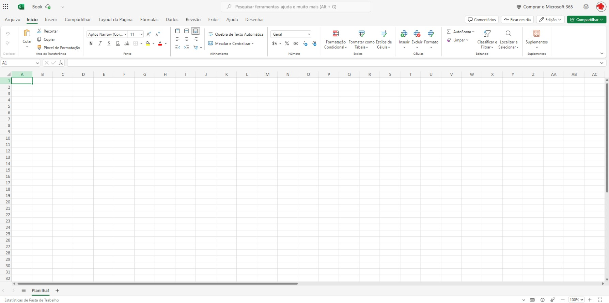

EXCEL BÁSICO
Introdução
A Tela de Trabalho
Movimentando-se pela Planilha
O Excel é um software de planilha eletrônica da Microsoft que permite organizar, calcular, analisar e apresentar dados. Os usos mais comuns do Excel são:
Controle financeiro
Criação de gráficos
Cálculos automáticos
Planejamento e gestão de projetos
Entre outros
Este curso abordará as principais funcionalidades oferecidas pelo programa Microsoft Office Excel , que é disponibilizado de maneira paga por mês/ano e online gratuitamente. Basta se informar neste link: Microsoft Office.
A Tela de Trabalho
Ao ser carregado, o Excel exibe sua tela de trabalho mostrando uma planilha em branco com o nome de Pasta 1. A tela de trabalho do Excel é composta por diversos elementos, entre os quais podemos destacar os seguintes:

Elementos do Excel
Células
Uma planilha é composta por células. Uma célula é o cruzamento de uma coluna com uma linha. A função de uma célula é armazenar informações que podem ser:
- Um texto
- Um número
- Uma fórmula que faça referência ao conteúdo de outras células
Cada célula é identificada por um endereço, composto pela letra da coluna e o número da linha.
Faixa de Opções
A faixa de opções organiza comandos em guias para facilitar o acesso às ferramentas. A seguir, as principais guias e suas funções:
Página Inicial
- Função: Ações básicas de formatação e edição.
- Principais ferramentas:
- Formatação de fonte
- Alinhamento
- Estilos de célula
- Inserção de números e filtros
- Comandos de copiar/colar
- Formatação de fonte
Inserir
- Função: Adicionar elementos visuais e organizacionais.
- Principais ferramentas:
- Inserir tabelas
- Gráficos
- Imagens
- Formas
- Hiperlinks
- Gráficos dinâmicos
- Inserir tabelas
Layout da Página
- Função: Configurar o design e a aparência da planilha.
- Principais ferramentas:
- Margens
- Orientação da página
- Escala
- Área de impressão
- Margens
Fórmulas
- Função: Trabalhar com funções e cálculos.
- Principais ferramentas:
- Inserir funções (matemáticas, lógicas, financeiras)
- Gerenciar nomes
- Verificar erros em fórmulas
- Inserir funções (matemáticas, lógicas, financeiras)
Dados
- Função: Gerenciar e organizar dados.
- Principais ferramentas:
- Ordenar
- Filtrar
- Remover duplicados
- Consolidar
- Importar dados
- Ordenar
Revisão
- Função: Revisar e proteger o conteúdo.
- Principais ferramentas:
- Verificação ortográfica
- Comentários
- Proteção de planilhas
- Verificação ortográfica
Exibir
- Função: Ajustar a forma como a planilha é exibida.
- Principais ferramentas:
- Modos de exibição
- Zoom
- Ocultar/mostrar elementos (linhas de grade, títulos)
- Modos de exibição
Guia Arquivo
- Função: Gerenciar o arquivo como um todo.
- Principais ferramentas:
- Salvar
- Abrir
- Imprimir
- Compartilhar
- Acessar as configurações do Excel
- Salvar
Workbook e Elementos da Planilha
Workbook
O Excel trabalha com o conceito de pasta ou livro de trabalho, onde cada planilha é criada como se fosse uma pasta com diversas folhas de trabalho.
- Na maioria das vezes, você trabalhará apenas com a primeira folha da pasta.
- Com esse conceito, em vez de criar doze planilhas diferentes para mostrar os gastos de sua empresa no ano, você pode criar uma única planilha e utilizar doze folhas na mesma pasta.
Marcadores de Página (Guias)
- Servem para selecionar uma página da planilha, de forma semelhante aos marcadores de agenda telefônica.
- Os marcadores recebem automaticamente os nomes Planilha1, Planilha2, etc., mas podem ser renomeados conforme necessário.
Barra de Fórmulas
- A barra de fórmulas tem como finalidade:
- Exibir o conteúdo da célula atual
- Permitir a edição do conteúdo de uma célula
- Exibir o conteúdo da célula atual
Movimentando-se pela Planilha
Para que uma célula possa receber algum tipo de dado ou formatação, ela precisa ser selecionada previamente, ou seja, tornar-se a célula ativa.
Métodos para Selecionar Células
1. Usando as teclas de seta
- As teclas de seta permitem mover o retângulo de seleção célula a célula na direção indicada.
2. Combinando teclas
- As teclas de seta podem ser usadas em combinação com outras teclas para acelerar a movimentação.
3. Usando o mouse
- O mouse pode ser usado para mover o indicador de célula e selecionar uma célula específica diretamente.
Usando Teclas
A tabela a seguir mostra um resumo das teclas que movimentam o cursor ou o retângulo de seleção pela planilha:
| Ação | Teclas a serem usadas |
|---|---|
| Mover uma célula para a direita | → |
| Mover uma célula para a esquerda | ← |
| Mover uma célula para cima | ↑ |
| Mover uma célula para baixo | ↓ |
| Última coluna da linha atual da tabela ou planilha | CTRL + → |
| Primeira coluna da linha atual da tabela ou planilha | CTRL + ← |
| Última linha da coluna atual da tabela ou planilha | CTRL + ↓ |
| Primeira linha da coluna atual da tabela ou planilha | CTRL + ↑ |
| Mover para célula A1 | CTRL + HOME |
| Criar uma nova planilha | CTRL + O |
| Salvar o arquivo | CTRL + B |
| Selecionar todas as células da planilha ou tabela | CTRL + A ou CTRL + T |
| Apagar a última ação | CTRL + Z |